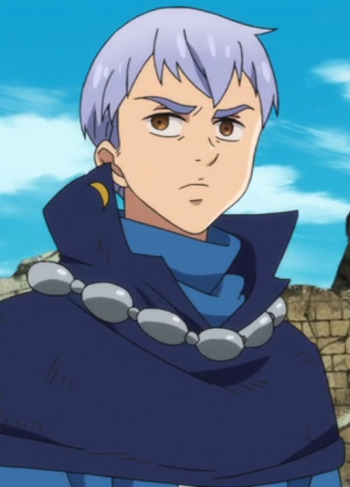

|  |
Gustaf |
- The Seven Deadly Sins
- The Seven Deadly Sins OVA
- The Seven Deadly Sins: Revival of The Commandments
|
Gustaf is a Ruby ranked Holy Knight and Jericho's older brother. He is very loyal and concern for his sister's safety. He has no confidences for his sister. |
 |
Hiroto Suwa |
|
Hiroto Suwa is a friend of Naho. He is very energetic and outgoing. He loves to hang out with his friends. He has a crush on Naho. |
 |
Rider of Red |
|
Rider of Red is the Rider-class servant of Shirou Kotomine of the Red Fraction in the Great Holy Grail War. His true name is Achilles, one of broad-minded and audacious, often displaying a carefree smile on his face. Archer of Black was his teacher. |